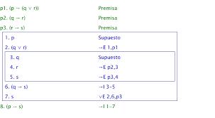
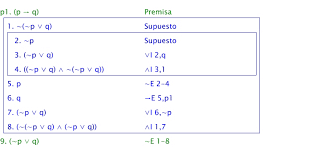

DEDUCCION AL ABSURDO
Reductio ad absurdum, expresión latina que significa literalmente 'reducción al absurdo', es uno de los métodos lógicos de demostración más usado en matemáticas para demostrar la validez (o invalidez) de proposiciones categóricas. Se parte por suponer como hipotética la veracidad o falsedad de la tesis de la proposición a demostrar y, mediante una concatenación de inferencias lógicas válidas, se pretende llegar a una contradicción lógica, un absurdo. De llegar a una contradicción, se concluye que la hipótesis de partida (que se había supuesto verdadera al principio) ha de ser falsa (o viceversa).
Para demostrar la invalidez de una proposición, se supone como punto de partida que la proposición es cierta. Si la derivación final es una contradicción, se concluye que la proposición original es falsa y el argumento es inválido. A este método también se le conoce como prueba por contradicción o prueba ad absurdum. Parte de la base es el cumplimiento del principio de exclusión de intermedios: una proposición que no puede ser falsa es necesariamente verdadera, y una proposición que no puede ser verdadera es necesariamente falsa.
|
|
|
|---|---|
|  |  |